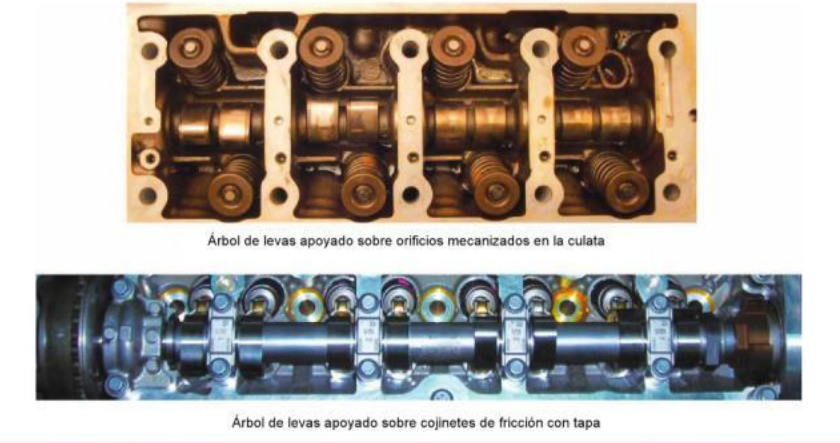
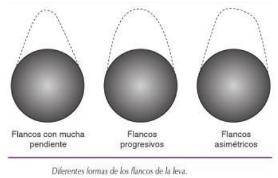

Árbol de levas
Árbol de levas: el árbol de levas es la pieza del motor que es movida por el cigüeñal de forma sincronizada con una relación de transmisión 1/2 y que contiene las levas que accionan las válvulas a través de diversos elementos intermedios posibles. A través de las levas, se convierte el movimiento circular del árbol de levas en un movimiento alternativo de las válvulas. El árbol de levas puede ubicarse en el bloque o en la culata y está apoyado sobre cojinetes de fricción con su correspondiente tapa apretada al par correspondiente o bien sobre unos orificios mecanizados directamente sobre la culata o el bloque. En cualquier caso, los apoyos van lubricados con aceite de motor a presión para minimizar el rozamiento.

Las levas tienen varios puntos y cotas característicos, que definen el diagrama de distribución. En función de la forma de los flancos de la leva, esta marcará de una forma determinada la apertura de la válvula. Por este motivo, se pueden encontrar levas cuyos flancos presenten una elevada pendiente para que la válvula abra y cierre rápidamente. Por otro lado, existen levas cuyos flancos tienen un perfil más progresivo y redondeado que hacen que la válvula tenga un perfil de apertura más lento. La geometría de la leva se diseña para obtener una alzada óptima y generar unas cotas de distribución adecuadas, especialmente ángulo de cruce, para cada tipo de motor. Los flancos de la leva pueden ser asimétricos porque puede interesar que la válvula abra de una forma y cierre de otra, por ejemplo una apertura rápida y un cierre lento.

En muchas ocasiones, además de las levas que accionan las válvulas, existen otras que pueden mover otros elementos como la bomba de gasolina en caso de ser mecánica, un inyector-bomba de gasoil... El árbol de levas se fabrica en fundición de hierro o acеro forjado. Posteriormente se mecaniza y se le aplican tratamientos térmicos para el endurecimiento superficial de las zonas de fricción de las levas, con el fin de aumentar su resistencia al desgaste.
